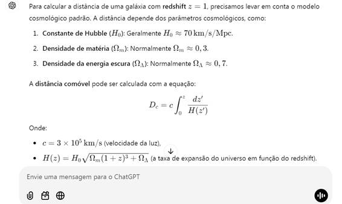
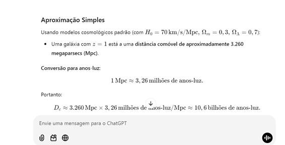

Universo Decrescente: A
Distância da galáxia em função de seu redshift (novo)
João Carlos Holland de Barcellos
Resumo: Utilizando o modelo “Universo Decrescente”[01] iremos mostrar evidências de que este novo modelo da dinâmica do Universo é menos disruptivo e mais adequado que o tradicional modelo Λ-CDM que postula a existência da Energia Escura.
Desenvolveremos também, a partir dessa nova teoria, uma fórmula matemática simples e direta que fornece a distância da galáxia em função do seu redshift.
Palavras Chaves: Universo Decrescente, Λ-CDM, Redshift, Expansão do Universo, Galáxias, Hubble.
Introdução
O modelo do “Universo Decrescente”[01][02] propõe que o campo gravitacional faz encolher o espaço e tudo o mais que esteja em seu interior. Dessa forma, se nós estamos sob um campo gravitacional estaremos também, diminuindo de tamanho assim como todas as nossas réguas e instrumentos de medida.
A taxa de contração é bastante lenta (7% a cada 1 bilhão de anos, aqui na Terra), mas é o suficiente para nos dar a falsa impressão de que as galáxias estão se afastando aceleradamente (se o meu padrão de distância vai diminuindo as distâncias parecerão cada vez mais afastadas).
Assim, para explicar o misterioso afastamento acelerado das galáxias, por esta interpretação-errônea-, fez com que se postulasse a existência da “Energia Escura”.
O Problema da “Energia Escura” é a sua origem: Ela nunca foi explicada ou detectada de outra forma além do próprio efeito de afastamento acelerado, e, portanto, viola a principal lei da termodinâmica: a Lei da conservação da Energia.
Além disso, viola também a teoria da relatividade, pois permite que as galáxias se afastem a uma velocidade superior à da Luz.
Universo Decrescente
O “Universo Decrescente”[01] é um novo modelo, que introduz uma única hipótese: A de que o campo gravitacional encolhe o espaço e tudo mais em seu interior. Isso descartaria a necessidade de postular a existência da Energia Escura e explicaria, de outra forma, o aparente afastamento acelerado das galáxias.
Neste novo modelo, a partir desta premissa, foi desenvolvida uma fórmula que fornece a Distância Aparente (D) (também chamada de “Distância própria” ou “Distância de Luminosidade”) em função do tempo e da Distância não aparente (D0) (também chamada de “Distância comoving”).
Falaremos um pouco mais detalhadamente sobre estes dois importantes conceitos da cosmologia.
Comoving Distance (D0)
e Proper Distance (D)
A distância Comoving (D0) e a distância Proper (D) são conceitos utilizados na cosmologia para medir a distância dos objetos, particularmente de galáxias.
No modelo ‘Λ-CDM’ :
-A distância comoving exclui a expansão do espaço e considera
apenas os movimentos peculiares da própria galáxia (ou outro objeto).
-A Distância proper (ou distância de Luminosidade), considera a expansão do
espaço devido a Energia Escura e, portanto, esta distância aumenta conforme
aumente o tempo.
No modelo ‘Universo Decrescente’ :
-A distância Comoving (D0) é a distância medida
por um observador no espaço sideral onde a influencia gravitacional possa ser
considerada desprezível. Neste caso, ele e seus instrumentos de medida não
sofrem alterações com o tempo.
-A distância Proper (D) é a distância medida da Terra, onde existem campos
gravitacionais múltiplos que faz o espaço e tudo o mais banhado por este campo,
ir se contraindo. Neste caso as distâncias medidas para além de nossa galáxia,
como vimos, também parecem estar aumentando.
Princípio da
Equivalência
Vamos agora entender, ou intuir que a contração do espaço pelo campo gravitacional é algo que deveria ser quase que esperado. vejamos:
Suponha que voce esteja em um foquete com os motores ligados e em aceleração. O que diz a teoria da relatividade?
Ela diz que o espaço no interior do foquege vai ser continuamente *contraido* na direção do movimento.
SE pudéssemos lançar mão do "Princípio da
Equivalência" o que teríamos?
Se a contração ocorre no interior do foguete acelerado (como de fato acontece)
algo parecido deve acontecer também no campo gravitacional.
Embora este argumento não seja uma prova, uma vez que o Principio da Equivalência não pode ser utilizado neste caso, isso dá uma noção que esta teoria não é tão fora de propósito quanto possa parecer.
A Fórmula Original
Do artigo referenciado[01][02] copiamos a fórmula da distância proper:
D(∆t) = D0* exp( H0*∆t) [F01]
Distância (proper) medida
em função do tempo e da distância comoving’.
Onde:
D =Distância medida por um observador da
Terra ( ‘Proper distance’)
D0 =Distância
vista por um observador fora do campo gravitacional ( ‘Comoving distance’)
H0 = Constante de Hubble
∆t = Intervalo de Tempo (t-t0) até a medida ser feita
Da fórmula
acima, no caso da distância de uma galáxia, foi também derivada [01] a Equação
de Hubble:
V = H0*D [F02]
Equação de Hubble
Onde:
V = Velocidade Aparente
D = Distância Aparente (Proper
distance)
H0 = Constante de Hubble
Redshift
É
interessante observar que podemos utilizar a fórmula [F01] para medirmos a
relação dos comprimentos de onda proveniente das galáxias. Assim teremos:
λ = λ0*exp( H0*∆t) [F03]
Comprimento de onda
medido dentro de um campo Gravitacional
Onde:
λ = Comprimento da Onda medida quando o fóton chega à Terra.
λ0 =
Comprimento da onda quando o fóton sai
da galáxia, em T0.
Utilizaremos
também a definição do redshift (Z):
Z = (λ- λ0
) / λ0 [F04]
Definição do Redshift
De [F03]
podemos notar que λ aumenta de tamanho, (e também seu redshift
) quanto mais tempo (∆t) demora a
onda viajar no espaço até chegar a Terra.
A Massa das Galáxias
Devemos
observar que, em nossa teoria, o redshift depende de 3 fatores principais:
-O Tempo para o fóton atravessar o espaço e
chegar a Terra
Quanto maior o tempo para o fóton chegar
à Terra maior tempo de encolhimento de nosso planeta e de nossa galáxia e,
portanto, maior será o comprimento que mediremos de algo fora da nossa galáxia , no caso, o tamanho da onda (causando um
deslocamento para o vermelho), isto é, aumentará o redshift.
-A Massa da Galáxia de Origem
A galáxia da qual o fóton é emitido, como toda galáxia, também está encolhendo.
Neste caso quanto maior sua massa maior será a velocidade de encolhimento e
mais energético (menor o comprimento de onda) terá o fóton. Isso contribuirá
para que o redshift seja menor em galáxias mais massivas.
Por outro
lado, contrabalançando este fator, existe também a perda de energia do fóton para sair do campo gravitacional da
galáxia. Como não temos a fórmula da contração da galáxia em função de sua
massa, fica difícil estimar qual desses dois fatores afeta mais o comprimento
de onda do fóton.
-A Massa da
Galáxia de Destino
Quanto maior a massa de nossa galáxia maior a taxa de contração (estimamos a
taxa de contração de 7% para cada 1 bilhão de anos aqui na Terra)[02]. Assim,
quanto maior a massa da galáxia de destino maior será o redshift calculado. Por
outro lado, também haverá o ganho de energia do fóton ao adentrar no campo
gravitacional de nossa galáxia.
Como
conclusão podemos dizer que se a perda de energia para sair do campo da galáxia
fonte for semelhante ao ganho de energia para adentrar na galáxia destino (a
nossa) então o redshift terá uma
dependência maior da taxa de contração da galáxia geradora do fóton.
Neste caso,
quanto maior a massa da galáxia na qual o fóton escapa, menor será seu
comprimento de onda de saída e, portanto, menor será o redshift medido aqui na
Terra. Então, galáxias mais massivas
tenderão a ter menores redshifts.
Algumas Evidências
Com base neste
novo paradigma, podemos fazer uma comparação com o modelo Λ-CDM (modelo da Expansão
acelerada do Universo pela Energia Escura).
Devemos
lembrar que, em nosso modelo, nossa galáxia, assim como todas as outras, estão
continuamente encolhendo e que os fótons provenientes destas
galáxia não sofrem este encolhimento enquanto estão atravessando o
imenso espaço interestelar entre as galáxias. E Isso pode durar bilhões de
anos.
Dessa forma,
podemos resumir o que estudamos e condensar os resultados na seguinte tabela:
Tabela Comparativa : “Λ-CDM” X “Universo Decrescente”
|
Tópico |
Energia Escura |
Universo Decrescente |
|
Primeira Lei da Termodinâmica (Conservação da Energia) |
Contraria a 1. Lei ao acelerar as galáxias sem uma fonte de Energia detectável. |
Não Contraria |
|
Teoria da Relatividade e Velocidade da Luz |
Contraria a T. Relatividade ao acelerar galáxias a uma velocidade superior à da Luz. |
Não contraria |
|
Lei de Hubble |
Provem da interpolação gráfica das observações. |
É derivada da Teoria. |
|
Redshift em função da Massa da Galáxia |
Não prevê |
Prevê menor Redshift para galáxias mais massivas. (Pois elas estão se contraindo mais rapidamente) |
|
Aquecimento médio das Galáxias (do Universo) |
Não prevê |
Prevê aquecimento das galáxias com o tempo.(A contração continua provoca aquecimento). |
|
Comoving distance( D0 ) e Proper distance ( D ) |
‘Magicamente’ supõe-se que uma parte do espaço não se expande. |
Surge naturalmente
da teoria: |
Tabela
Comparativa do modelo “Universo Decrescente” em relação ao modelo Λ-CDM
Distância da Galáxia
em Função do seu RedShift (Z)
Desenvolveremos agora a fórmula que produz a distância (comoving) de uma galáxia em função de seu redshift. (A fórmula, a rigor, seria válida para galáxias com massas semelhantes às da nossa Via-Láctea. Para galáxias com massas muito discrepantes da Via-Láctea o resultado pode ficar prejudicado).
Para simplificar tomaremos T0 = 0 ( o instante que o fóton sai da sua galáxia)
Das equações [F03] e [F04] derivamos:
Z+1 = exp(H0*T) [F05]
Redshift em função do Tempo
percorrido até a Terra
Onde T é o tempo necessário para o fóton, partindo da galáxia, chegar à Terra que pode ser calculado como:
T = D /c [F06]
Tempo da viagem do fóton em
função da distância comoving
Onde c = velocidade da Luz no vácuo. Mas, e porque não T=D0/c ? Isto porque a constante de Hubble H0 é calibrada empiricamente usando as distâncias próprias atuais. Portanto, o tempo de percurso da luz deve ser expresso como t = D/c, onde D denota a distância própria atual, e não a distância na escala de emissão D0. Usar D0 misturaria grandezas definidas em diferentes escalas de distância e levaria a uma derivação inconsistente.
De [F06] e [F01] teremos:
D = cT*exp(H0T) [F07]
Distância comoving em função do
Tempo percorrido
Fornece a distância proper em função do Tempo T que o fóton levou até chegar à Terra.
Mas de [F05] isolamos T:
T = ln(Z+1) / H0 [F08]
Tempo em função do Redshift
Agora utilizando [F06], [F05] e [F01] produziremos:
D = c*ln(Z+1) /H0 [F09]
Distância proper em função do
Redshift
É a distância própria em função do Redshift
Entretanto de [F01] e [F05] podemos escrever:
D0 =
D/(Z+1) [F10]
Distância Comoving ( em função da Distância
de Luninosidade)
Esta equação [F09] também é conhecida (no modelo Λ-CDM) como “Distância de Luminosidade” que relaciona a distância comoving(D0) com a distância aparente (D)[F10].
Finalmente podemos utilizar [F09] e F[10] e teremos finalmente:
D0 = c ln( Z+1 ) /(Z+1) /H0 [F11]
Distância Comoving em função do redshift
Que fornece a distância comoving em função do Redshift da galáxia
Alguns Valores
Numéricos
Se Tomarmos :
c/H0 = 14,3 Bilhões de anos
Podemos montar a seguinte tabela :
|
Redshift |
Universo
Decrescente |
Modelo Padrão (Λ-CDM) |
Diferença |
|
1 |
9.9 |
10.6 |
7% |
|
2 |
15.7 |
16.9 |
7% |
|
3 |
19.8 |
20.4 |
3% |
|
4 |
23.0 |
26.2 |
13% |
|
10 |
34.2 |
35.8 |
4% |
Comparação de
distância Comoving para Universo Decrescente e Λ-CDM
Implicações e Consistência Observacional
A relação
distância-desvio para o vermelho derivada oferece uma nova perspectiva sobre
observações cósmicas. Notavelmente:
1. Relação Direta : A equação direta entre distância e desvio para o
vermelho contrasta com as relações mais complexas previstas pelo modelo Λ-CDM,
simplificando a interpretação de dados astronômicos.
2. Ausência
de Energia Escura: Ao atribuir o desvio para o vermelho observado ao
encolhimento do espaço e da matéria em vez de um universo em expansão, este
modelo elimina a necessidade de energia escura, abordando um dos componentes
mais enigmáticos do modelo cosmológico padrão.
3.
Consistência com Observações: O modelo do Universo Encolhido se alinha com os
dados observacionais atuais, fornecendo uma explicação alternativa para fenômenos
tradicionalmente atribuídos à expansão cósmica.
A seguir, a título de exemplo, mostraremos como o ChatGPT calcula estas distâncias utilizando o modelo Λ-CDM para z = 1:
ChatGPT calcula a
distância utilizando o modelo Λ-CDM


Conclusão
Podemos concluir que o modelo do “Universo Decrescente” é um modelo bem mais simples e, principalmente com menos anomalias teóricas que o modelo Λ-CDM.
Ele fornece uma alternativa convincente ao modelo Λ-CDM, evitando anomalias teóricas como a violação de leis termodinâmicas ou a exigência de "Energia Escura" não detectada e conflito com a Teoria da Relatividade. Ao propor que os campos gravitacionais encolhem o espaço e os objetos, ele explica a recessão acelerada observada de galáxias de forma mais natural.
Embora promissor mais testes empíricos e comparações serão
necessários para validar as previsões do modelo em relação aos dados
observacionais, particularmente em relação à massa da galáxia, relações de
desvio para o vermelho e radiação cósmica de fundo. No entanto, o modelo
oferece uma estrutura elegante que merece mais exploração e desenvolvimento.
Referências
[01]
Derivation of Hubble’s Law and its relation to dark energy and dark matter
https://medcraveonline.com/OAJMTP/OAJMTP-02-00049.pdf
[02]
Derivation of Hubble’s Law and the End of the Darks Elements
https://www.scirp.org/journal/Paperabs?paperid=91689
[03] Decreasing Universe: Redshifts and Distance Data Refute
the L-CDM Model
https://www.wecmelive.com/open-access/decreasing-universe-redshifts-and-distance-data-refute-the-lcdmmodel.pdf
[04] Observational Evidence of Intrinsic Differential Redshifts in Galaxy
Pairs: A Test of the Decreasing Universe Theory (DUT) https://jocaxx.github.io/DUniverse/Todos/DUT_GAL_Eng.pdf
[05] Decreasing universe: the ‘Dark Matter’ effect
https://www.medcrave.com/articles/det/29521/Decreasing-universe-the-Dark-Mattereffect
[06] Decreasing Universe Theory: The Tully-Fisher Relation
https://philarchive.org/rec/BARDUT-3
[07] Decreasing universe: the CMB and the age of the universe
http://medcraveonline.com/PAIJ/PAIJ-09-00372.pdf
[08] Decreasing Universe Theory: Galaxies without Dark Matter (NGC 1052-DF2,
DF4, and DF9)
https://jocaxx.github.io/DUniverse/Todos/DUT_NGC1052_ENG.pdf
[09] Decreasing Universe: AI Analysis of Article Data Disproves L-CDM Model
https://philpapers.org/rec/BARDUT-2
[10] What if the Universe Is NOT Expanding?
https://insertphilosophyhere.com/what-if-the-universe-is-not-expanding/
[11] The instability of critical and underdense Friedmann spacetimes at the Big Bang as an alternative to dark energy https://royalsocietypublishing.org/rspa/article/482/2338/20250912/481920/The-instability-of-critical-and-underdense
[12] Dark energy 'doesn't exist' so can't be pushing 'lumpy'
universe apart, physicists say
https://phys.org/news/2024-12-dark-energy-doesnt-lumpy-universe.html
[13]Decreasing Universe Theory:
Main Articles
https://jocaxx.github.io/DUniverse/Articles.pdf